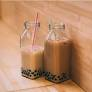

Milk Tea Recipe
Back to Home Page

Description
Milk tea is a popular beverage made with black tea, milk, and sugar. It's a comforting and refreshing drink that's enjoyed in many cultures around the world.
Ingredients
- 1 cup black tea leaves
- 1 cup milk
- 1/2 cup sugar
- 1/4 teaspoon vanilla extract
- 1/4 teaspoon cinnamon powder
- 1/4 teaspoon cardamom powder
Instructions
- Boil 1 cup of water in a pot.
- Add 1 cup of black tea leaves to the boiling water and let it steep for 3-5 minutes.
- Strain the tea into a cup and add 1 cup of milk.
- Add 1/2 cup of sugar and stir until dissolved.
- Add 1/4 teaspoon vanilla extract, 1/4 teaspoon cinnamon powder, and 1/4 teaspoon cardamom powder. Stir well.
- Let the milk tea cool for 10 minutes before serving. Enjoy!